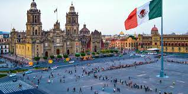

"MÉXICO"
Historia de México
El inicio de la historia de México se remonta a la llegada de los pobladores originarios hace más de 10.000 años.
Poco a poco comenzaron a surgir grandes pueblos (destacan las civilizaciones Olmecas, Teotihuacana, Maya y Mexica o Azteca) que ocuparon diferentes y
grandes territorios y desarrollaron sus civilizaciones. En el siglo XV llegaron los españoles y, tras una guerra de conquista, sometieron a los indígenas
locales y crearon un virreinato (estado colonial). El dominio español duró hasta el 1821, año en que México gana la guerra de Independencia y se crea el
Primer Imperio Mexicano que pronto da paso a la Primera República Federativa.Sucesivamente llegan nuevas guerras, con Francia y Estados Unidos concretamente.
Es entonces cuando México pierde una gran parte de su territorio en favor de los Estados Unidos de América (prácticamente toda la costa suroeste del país).
El siglo XX se caracteriza por una gran revolución, gracias a la cuál (y no sin grandes pérdidas) México se volverá un estado democrático a todos los efectos.
Poblacion
México tiene una densidad de población moderada de 65 habitantes por Km2.
Comida
Dentro de la gastronomía mexicana podrás encontrar platillos exóticos y tradicionales. Donde podras encontrar
El pozole el cual es un caldo con granos de maíz, y dependiendo de la región puede ser blanco, verde o rojo. Sin embargo, al menos existen unas veinte variedades de pozole, ademas del mole
El mole es una salsa que acompaña el pollo o al guajolote. El más popular es el mole poblano, que proviene de Puebla como su nombre lo indica. En cada estado del país este platillo se prepara de distintas formas.

Fotos
